Plate rollers and slip rolls
A plate roller (plate rolling machine) bends flat plate or sheet into cylinders and cones by passing it between three or four rolls; a slip roll is the light-gauge version whose top roll slips open to remove the part. Every İşitan plate roller and slip roll NovoTech sells in Canada: hydraulic 4-roll plate rolling machines with NC control for production, hydraulic and motorized 3-roll plate rollers for the fabrication shop, and manual and motorized slip rolls for HVAC and sheet-metal work — from a 2 ft bench slip roll to 10.2 ft machines that roll 1/2″ plate. Built in Turkey by İşitan since 1959, supplied with CSA-approved panels and supported from NovoTech's warehouse in Mississauga, ON. Looking for a plate roller machine, sheet metal roller, slip roller or plate bending rolls? These are the ones we stock and service.
- Hydraulic 4-roll plate rollers — 2.1 to 10.2 ft, up to 1/2″ plate, NC and automation
- Hydraulic and motorized 3-roll plate rollers — initial pinch, cone bending
- Slip rolls — manual and motorized, 2 to 6.7 ft, wire grooves standard
İşitan machines are made in Turkey by İşitan Makine — sheet-metal forming machinery since 1959, with European components. Sold, installed and supported in Canada by NovoTech.
Specifications checked against the manufacturer's current catalogue · page updated
-

Hydraulic 4-roll plate rollers
4R HMS from 2.1 ft to 10.2 ft with NC control and automation, plus corrugated-sheet and special 4-roll machines.
2 machine families · specifications and photos
-

Hydraulic 3-roll plate rollers
MRM-H initial-pinch plate rolls to 10 ft and 1/2″ plate, and the compact 3R HMD with joystick back-roll control.
2 machine families · specifications and photos
-
Motorized 3-roll plate rollers
MRM-S, IRM and RM mechanical plate rolls from 3.4 ft to 10 ft — the shop's everyday rolls, with a composite-panel version.
3 machine families · specifications and photos
-

Slip rolls
Manual R and RS, motorized IR and economical RST slip rolls from 2 ft bench models to 6.7 ft.
4 machine families · specifications and photos
Hydraulic 4-roll plate rollers line-up
-
4R HMS hydraulic 4-roll plate rollers
4R HMS 650x80 – 4R HMS 3100x250 · 36 models
Working lengths 2.1–10.2 ft (650–3100 mm) · rolls up to 1/2″ (12 mm)
İşitan's main line of 4-roll plate rolling machines, from a 2.1 ft bench-size roll to 10.2 ft machines that roll 3/8″ plate. The pinch roll and both side rolls move on a pyramid-style linear path driven by hydraulic cylinders, while the top roll is powered by an electric motor through a planetary gearbox — so the sheet is pinched, pre-bent at both ends and rolled into a full cylinder without being removed from the machine. Cone bending, hydraulic drop-end and three digital readouts are standard; NC control with programmed roll positions, overhead crane and side supports turn it into a semi- or fully automatic production line.
Specifications and photos -
4R OM / 4R HOM / 4RH corrugated sheet and special 4-roll machines
4R OM · 4R HOM · 4RH 10x90
Corrugated sheet to 11 ga (3 mm) · widths to 6.7 ft (2050 mm) · special builds to order
Purpose-built 4-roll machines for corrugated galvanized sheet up to 11 ga — the material of tanks, roofs and silos. The rolls carry a corrugation profile that can be custom made to the customer's sheet, with motor + reducer drive and motorized (4R OM, 4R HOM) or hydraulic (4RH) linear roll movement. İşitan also builds special plate rolls to order for widths, profiles and automation that the standard range does not cover.
Specifications and photos

Hydraulic 3-roll plate rollers line-up
-
MRM-H hydraulic asymmetrical 3-roll plate rollers
MRM-H 650x80 – MRM-H 3100x250 · 32 models
Working lengths 2.1–10 ft (650–3100 mm) · rolls up to 1/2″ (12 mm)
Initial-pinch 3-roll plate rolls with hydraulic movement of the back and bottom rolls and motor-driven rolls through planetary gearboxes — the hydraulic version of the MRM-S. The sheet is pinched between the top and bottom roll, pre-bent against the back roll, then rolled; the back roll runs on ball bearings for thin-sheet work and a hydraulic drop-end releases the finished cylinder. Cone bending and two digital readouts are standard; NC control, overhead crane and side supports are available for larger diameters.
Specifications and photos -
3R HMD mechanical-hydraulic 3-roll plate rollers
3R HMD 1270x90 · 1550x90 · 2050x95
Working lengths 4.2–6.7 ft (1270–2050 mm) · rolls up to 12 ga (2.5 mm)
A new compact series in which all three rolls are powered by one motor and planetary reducer, with a hydraulic piston moving the back roll: joystick positioning with a digital readout makes cone bending and repeat radii easy. Cast-iron frames, induction-hardened SAE 1050 rolls and wire grooves as standard — a step up from a slip roll for HVAC ducting, signage and light fabrication up to 12 ga.
Specifications and photos
Motorized 3-roll plate rollers line-up
-
MRM-S mechanical asymmetrical 3-roll plate rollers
MRM-S 1050x130 – MRM-S 3050x220 · 21 models
Working lengths 3.4–10 ft (1050–3050 mm) · rolls up to 3/8″ (10 mm)
Motorized initial-pinch plate rolls for light to medium-duty work up to 3/8″ plate: a planetary gearbox drives the rolls, the back roll moves linearly on a motorized adjustment and a manual drop-end with safety switch releases the finished cylinder. Ideal for aluminum forming, HVAC and ventilation ducting, signage panels, machine guards and sheet-metal enclosures. A special version carries a top roll of segmented hard-plastic (Delrin) rings for rolling aluminum composite panels (Alucobond / ACM) without marking the surface.
Specifications and photos -
IRM mechanical asymmetrical 3-roll plate rollers
IRM 1050x110 – IRM 2550x140 · 10 models
Working lengths 3.4–8.4 ft (1050–2550 mm) · rolls up to 3/16″ (5 mm)
Value-priced motorized plate rolls, a favourite of small workshops: top and bottom rolls driven by a single gearbox and gear system, spheroidal cast-iron frames, wire grooves at the roll ends and a cone-bending device, with a mobile control panel and foot pedal. Designed for light to medium work up to 3/16″ — aluminum forming, HVAC ducting, signage panels and sheet-metal enclosures.
Specifications and photos -
RM motorized 3-roll asymmetrical plate rollers
RM 1050x90 · 1270x90 · 1550x90 · 2050x95
Working lengths 3.4–6.7 ft (1050–2050 mm) · rolls up to 11 ga (3 mm)
Motorized 3-roll plate rolls on a reinforced steel frame with a single gearbox and chain/gear drive, foot-pedal control and a brake motor for precise stops. Rolls up to 11 ga, with wire grooves and a cone-bending device as standard — the motorized sister of the RS manual roll for ducting, cylinders and light sheet-metal work.
Specifications and photos


Slip rolls line-up
-
IR motorized 3-roll slip rolls
IR 1050x46 – IR 2050x75 · 10 models
Working lengths 3.4–6.7 ft (1050–2050 mm) · rolls up to 14 ga (2 mm)
Motorized slip rolls with foot-pedal control for sheet up to 14 ga: top and bottom rolls driven by a single gearbox and chain/gear system, a reinforced steel frame, manual drop-end and wire grooves at the roll ends. A geared lock gives quick back-roll adjustment and a brake motor stops the rolls exactly where the operator wants them — the everyday roll of HVAC and sheet-metal shops.
Specifications and photos -
R manual 3-roll slip rolls — floor-standing and bench models
R 610x46 – R 2050x75 · 13 models
Working lengths 2–6.7 ft (610–2050 mm) · rolls up to 14 ga (2 mm)
Hand-crank slip rolls from a 2 ft bench roll to a 6.7 ft floor-standing machine: certified SAE 1050 steel rolls, a steel frame on the 68 and 75 mm roll models, manual drop-end and wire grooves at the roll ends. An easy bottom-roll pinching lever sets the sheet thickness; bench models are supplied without a stand for mounting on a workbench.
Specifications and photos -
RS manual 3-roll asymmetrical plate rollers
RS 1050x90 · 1270x90 · 1550x90 · 2050x95
Working lengths 3.4–6.7 ft (1050–2050 mm) · rolls up to 11 ga (3 mm)
The manual version of the RM: the same reinforced steel frame, certified SAE 1050 rolls, cone-bending device and wire grooves, turned by a hand crank instead of a motor. Rolls up to 11 ga on the shortest model — a sturdy, no-electrics roll for shops that bend a few cylinders a day.
Specifications and photos -
RST / RST-M economical manual and motorized plate rollers
RST 1270x86 · RST-M 1270x86 · RST 1550x86 · RST-M 1550x86
Working lengths 4.1–5.1 ft (1270–1550 mm) · rolls up to 12 ga (2.5 mm)
Reinforced, value-priced plate rolls for light work up to 12 ga — ventilation ducting, signage panels, machine guards and sheet-metal parts. Cast main frames, a manual drop-end top roll and back and bottom rolls adjusted up and down by screws on both sides; the RST-M adds a geared motor with electrical box and foot pedal.
Specifications and photos
The range at a glance
Working length, rolling capacity, top roll diameter, motor and weight for every model. Each row links to the full specification table of its series.
| Model | Type | Working length | Rolling capacity | Top roll Ø | Motor | Weight |
|---|---|---|---|---|---|---|
| 4R HMS 650x804R HMS 4-roll | 4-roll plate rollers | 2.1 ft · 25.6″ (650 mm) | 11 ga / 10 ga (3 / 3.5 mm) | 3.15″ (80 mm) | 1.5 + 1 HP (1.1 + 0.75 kW) | 2,094 lb (950 kg) |
| 4R HMS 1050x804R HMS 4-roll | 4-roll plate rollers | 3.4 ft · 41.3″ (1050 mm) | 14 ga / 12 ga (2 / 2.5 mm) | 3.15″ (80 mm) | 1.5 + 1 HP (1.1 + 0.75 kW) | 2,535 lb (1,150 kg) |
| 4R HMS 1050x1004R HMS 4-roll | 4-roll plate rollers | 3.4 ft · 41.3″ (1050 mm) | 12 ga / 10 ga (2.5 / 3.5 mm) | 3.94″ (100 mm) | 1.5 + 1 HP (1.1 + 0.75 kW) | 2,756 lb (1,250 kg) |
| 4R HMS 1050x1304R HMS 4-roll | 4-roll plate rollers | 3.4 ft · 41.3″ (1050 mm) | 3/16″ / 1/4″ (5 / 6 mm) | 5.12″ (130 mm) | 3 + 1.5 HP (2.2 + 1.1 kW) | 4,519 lb (2,050 kg) |
| 4R HMS 1270x804R HMS 4-roll | 4-roll plate rollers | 4.2 ft · 50.0″ (1270 mm) | 16 ga / 14 ga (1.5 / 2 mm) | 3.15″ (80 mm) | 1.5 + 1.5 HP (1.1 + 1.1 kW) | 2,756 lb (1,250 kg) |
| 4R HMS 1270x1004R HMS 4-roll | 4-roll plate rollers | 4.2 ft · 50.0″ (1270 mm) | 14 ga / 11 ga (2 / 3 mm) | 3.94″ (100 mm) | 1.5 + 1.5 HP (1.1 + 1.1 kW) | 2,976 lb (1,350 kg) |
| 4R HMS 1270x1304R HMS 4-roll | 4-roll plate rollers | 4.2 ft · 50.0″ (1270 mm) | 8 ga / 3/16″ (4 / 5 mm) | 5.12″ (130 mm) | 3 + 1.5 HP (2.2 + 1.1 kW) | 4,740 lb (2,150 kg) |
| 4R HMS 1270x1504R HMS 4-roll | 4-roll plate rollers | 4.2 ft · 50.0″ (1270 mm) | 3/16″ / 1/4″ (5 / 6 mm) | 5.91″ (150 mm) | 3 + 1.5 HP (2.2 + 1.1 kW) | 5,027 lb (2,280 kg) |
| 4R HMS 1270x1804R HMS 4-roll | 4-roll plate rollers | 4.2 ft · 50.0″ (1270 mm) | 5/16″ / 3/8″ (8 / 10 mm) | 7.09″ (180 mm) | 5.4 + 2 HP (4 + 1.5 kW) | 5,952 lb (2,700 kg) |
| 4R HMS 1270x2004R HMS 4-roll | 4-roll plate rollers | 4.2 ft · 50.0″ (1270 mm) | 3/8″ / 1/2″ (10 / 12 mm) | 7.87″ (200 mm) | 5.4 + 2 HP (4 + 1.5 kW) | 6,614 lb (3,000 kg) |
| 4R HMS 1550x1004R HMS 4-roll | 4-roll plate rollers | 5.1 ft · 61.0″ (1550 mm) | 16 ga / 14 ga (1.5 / 2 mm) | 3.94″ (100 mm) | 1.5 + 1.5 HP (1.1 + 1.1 kW) | 3,307 lb (1,500 kg) |
| 4R HMS 1550x1304R HMS 4-roll | 4-roll plate rollers | 5.1 ft · 61.0″ (1550 mm) | 10 ga / 7 ga (3.5 / 4.5 mm) | 5.12″ (130 mm) | 3 + 1.5 HP (2.2 + 1.1 kW) | 4,960 lb (2,250 kg) |
| 4R HMS 1550x1504R HMS 4-roll | 4-roll plate rollers | 5.1 ft · 61.0″ (1550 mm) | 7 ga / 1/4″ (4.5 / 6 mm) | 5.91″ (150 mm) | 3 + 1.5 HP (2.2 + 1.1 kW) | 5,225 lb (2,370 kg) |
| 4R HMS 1550x1804R HMS 4-roll | 4-roll plate rollers | 5.1 ft · 61.0″ (1550 mm) | 1/4″ / 3/8″ (6 / 10 mm) | 7.09″ (180 mm) | 5.4 + 2 HP (4 + 1.5 kW) | 6,393 lb (2,900 kg) |
| 4R HMS 1550x2004R HMS 4-roll | 4-roll plate rollers | 5.1 ft · 61.0″ (1550 mm) | 3/8″ / 7/16″ (10 / 11 mm) | 7.87″ (200 mm) | 5.4 + 2 HP (4 + 1.5 kW) | 7,165 lb (3,250 kg) |
| 4R HMS 1550x2204R HMS 4-roll | 4-roll plate rollers | 5.1 ft · 61.0″ (1550 mm) | 3/8″ / 1/2″ (10 / 12 mm) | 8.66″ (220 mm) | 7.4 + 2 HP (5.5 + 1.5 kW) | 9,370 lb (4,250 kg) |
| 4R HMS 1550x2504R HMS 4-roll | 4-roll plate rollers | 5.1 ft · 61.0″ (1550 mm) | 1/2″ / 9/16″ (12 / 14 mm) | 9.84″ (250 mm) | 10 + 2 HP (7.5 + 1.5 kW) | 10,251 lb (4,650 kg) |
| 4R HMS 2050x1304R HMS 4-roll | 4-roll plate rollers | 6.7 ft · 80.7″ (2050 mm) | 11 ga / 8 ga (3 / 4 mm) | 5.12″ (130 mm) | 3 + 1.5 HP (2.2 + 1.1 kW) | 4,982 lb (2,260 kg) |
| 4R HMS 2050x1504R HMS 4-roll | 4-roll plate rollers | 6.7 ft · 80.7″ (2050 mm) | 8 ga / 1/4″ (4 / 6 mm) | 5.91″ (150 mm) | 3 + 1.5 HP (2.2 + 1.1 kW) | 6,173 lb (2,800 kg) |
| 4R HMS 2050x1804R HMS 4-roll | 4-roll plate rollers | 6.7 ft · 80.7″ (2050 mm) | 1/4″ / 5/16″ (6 / 8 mm) | 7.09″ (180 mm) | 5.4 + 2 HP (4 + 1.5 kW) | 7,275 lb (3,300 kg) |
| 4R HMS 2050x2004R HMS 4-roll | 4-roll plate rollers | 6.7 ft · 80.7″ (2050 mm) | 5/16″ / 3/8″ (8 / 10 mm) | 7.87″ (200 mm) | 5.4 + 2 HP (4 + 1.5 kW) | 8,267 lb (3,750 kg) |
| 4R HMS 2050x2204R HMS 4-roll | 4-roll plate rollers | 6.7 ft · 80.7″ (2050 mm) | 3/8″ / 7/16″ (10 / 11 mm) | 8.66″ (220 mm) | 7.4 + 2 HP (5.5 + 1.5 kW) | 10,582 lb (4,800 kg) |
| 4R HMS 2050x2504R HMS 4-roll | 4-roll plate rollers | 6.7 ft · 80.7″ (2050 mm) | 3/8″ / 1/2″ (10 / 12 mm) | 9.84″ (250 mm) | 10 + 2 HP (7.5 + 1.5 kW) | 11,795 lb (5,350 kg) |
| 4R HMS 2550x1504R HMS 4-roll | 4-roll plate rollers | 8.4 ft · 100.4″ (2550 mm) | 11 ga / 8 ga (3 / 4 mm) | 5.91″ (150 mm) | 3 + 1.5 HP (2.2 + 1.1 kW) | 7,121 lb (3,230 kg) |
| 4R HMS 2550x1804R HMS 4-roll | 4-roll plate rollers | 8.4 ft · 100.4″ (2550 mm) | 8 ga / 1/4″ (4 / 6 mm) | 7.09″ (180 mm) | 5.4 + 2 HP (4 + 1.5 kW) | 8,157 lb (3,700 kg) |
| 4R HMS 2550x2004R HMS 4-roll | 4-roll plate rollers | 8.4 ft · 100.4″ (2550 mm) | 1/4″ / 5/16″ (6 / 8 mm) | 7.87″ (200 mm) | 5.4 + 2 HP (4 + 1.5 kW) | 9,370 lb (4,250 kg) |
| 4R HMS 2550x2204R HMS 4-roll | 4-roll plate rollers | 8.4 ft · 100.4″ (2550 mm) | 1/4″ / 3/8″ (6 / 10 mm) | 8.66″ (220 mm) | 7.4 + 2 HP (5.5 + 1.5 kW) | 11,905 lb (5,400 kg) |
| 4R HMS 2550x2504R HMS 4-roll | 4-roll plate rollers | 8.4 ft · 100.4″ (2550 mm) | 5/16″ / 3/8″ (8 / 10 mm) | 9.84″ (250 mm) | 10 + 2 HP (7.5 + 1.5 kW) | 13,448 lb (6,100 kg) |
| 4R HMS 3100x1804R HMS 4-roll | 4-roll plate rollers | 10.2 ft · 122.0″ (3100 mm) | 11 ga / 8 ga (3 / 4 mm) | 7.09″ (180 mm) | 5.4 + 2 HP (4 + 1.5 kW) | 9,039 lb (4,100 kg) |
| 4R HMS 3100x2004R HMS 4-roll | 4-roll plate rollers | 10.2 ft · 122.0″ (3100 mm) | 8 ga / 1/4″ (4 / 6 mm) | 7.87″ (200 mm) | 5.4 + 2 HP (4 + 1.5 kW) | 10,472 lb (4,750 kg) |
| 4R HMS 3100x2204R HMS 4-roll | 4-roll plate rollers | 10.2 ft · 122.0″ (3100 mm) | 1/4″ / 5/16″ (6 / 8 mm) | 8.66″ (220 mm) | 7.4 + 2 HP (5.5 + 1.5 kW) | 13,228 lb (6,000 kg) |
| 4R HMS 3100x2504R HMS 4-roll | 4-roll plate rollers | 10.2 ft · 122.0″ (3100 mm) | 1/4″ / 3/8″ (6 / 10 mm) | 9.84″ (250 mm) | 10 + 2 HP (7.5 + 1.5 kW) | 14,991 lb (6,800 kg) |
| 4RH 10x90 + Custom voltage: 208 V, 240 V, 480 V or 600 V 3-phase, or 2404R corrugated & special | 4-roll plate rollers | 3.4 ft · 41.3″ | — | 3.54″ (90 mm) | 3 HP (2.2 kW) | 1,984 lb (900 kg) |
| MRM-H 650x80MRM-H hydraulic 3-roll | Hydraulic 3-roll | 2.1 ft · 25.6″ (650 mm) | 11 ga / 10 ga (3 / 3.5 mm) | 3.15″ (80 mm) | 1.5 + 1 HP (1.1 + 0.75 kW) | 1,764 lb (800 kg) |
| MRM-H 1050x80MRM-H hydraulic 3-roll | Hydraulic 3-roll | 3.4 ft · 41.3″ (1050 mm) | 14 ga / 12 ga (2 / 2.5 mm) | 3.15″ (80 mm) | 1.5 + 1.5 HP (1.1 + 1.1 kW) | 2,028 lb (920 kg) |
| MRM-H 1050x100MRM-H hydraulic 3-roll | Hydraulic 3-roll | 3.4 ft · 41.3″ (1050 mm) | 12 ga / 11 ga (2.5 / 3 mm) | 3.94″ (100 mm) | 1.5 + 1 HP (1.1 + 0.75 kW) | 2,469 lb (1,120 kg) |
| MRM-H 1050x130MRM-H hydraulic 3-roll | Hydraulic 3-roll | 3.4 ft · 41.3″ (1050 mm) | 11 ga / 3/16″ (3 / 5 mm) | 5.12″ (130 mm) | 3 + 1.5 HP (2.2 + 1.1 kW) | 3,792 lb (1,720 kg) |
| MRM-H 1270x80MRM-H hydraulic 3-roll | Hydraulic 3-roll | 4.2 ft · 50.0″ (1270 mm) | 16 ga / 14 ga (1.5 / 2 mm) | 3.15″ (80 mm) | 1.5 + 1.5 HP (1.1 + 1.1 kW) | 2,094 lb (950 kg) |
| MRM-H 1270x100MRM-H hydraulic 3-roll | Hydraulic 3-roll | 4.2 ft · 50.0″ (1270 mm) | 14 ga / 11 ga (2 / 3 mm) | 3.94″ (100 mm) | 1.5 + 1.5 HP (1.1 + 1.1 kW) | 2,535 lb (1,150 kg) |
| MRM-H 1270x130MRM-H hydraulic 3-roll | Hydraulic 3-roll | 4.2 ft · 50.0″ (1270 mm) | 8 ga / 3/16″ (4 / 5 mm) | 5.12″ (130 mm) | 3 + 1.5 HP (2.2 + 1.1 kW) | 3,858 lb (1,750 kg) |
| MRM-H 1270x150MRM-H hydraulic 3-roll | Hydraulic 3-roll | 4.2 ft · 50.0″ (1270 mm) | 3/16″ / 1/4″ (5 / 6 mm) | 5.91″ (150 mm) | 3 + 1.5 HP (2.2 + 1.1 kW) | 4,134 lb (1,875 kg) |
| MRM-H 1270x180MRM-H hydraulic 3-roll | Hydraulic 3-roll | 4.2 ft · 50.0″ (1270 mm) | 5/16″ / 3/8″ (8 / 10 mm) | 7.09″ (180 mm) | 5.4 + 1.5 HP (4 + 1.1 kW) | 4,630 lb (2,100 kg) |
| MRM-H 1270x200MRM-H hydraulic 3-roll | Hydraulic 3-roll | 4.2 ft · 50.0″ (1270 mm) | 3/8″ / 1/2″ (10 / 12 mm) | 7.87″ (200 mm) | 5.4 + 2 HP (4 + 1.5 kW) | 4,850 lb (2,200 kg) |
| MRM-H 1550x100MRM-H hydraulic 3-roll | Hydraulic 3-roll | 5.1 ft · 61.0″ (1550 mm) | 16 ga / 14 ga (1.5 / 2 mm) | 3.94″ (100 mm) | 1.5 + 1.5 HP (1.1 + 1.1 kW) | 2,646 lb (1,200 kg) |
| MRM-H 1550x130MRM-H hydraulic 3-roll | Hydraulic 3-roll | 5.1 ft · 61.0″ (1550 mm) | 10 ga / 7 ga (3.5 / 4.5 mm) | 5.12″ (130 mm) | 3 + 1.5 HP (2.2 + 1.1 kW) | 4,079 lb (1,850 kg) |
| MRM-H 1550x150MRM-H hydraulic 3-roll | Hydraulic 3-roll | 5.1 ft · 61.0″ (1550 mm) | 7 ga / 1/4″ (4.5 / 6 mm) | 5.91″ (150 mm) | 3 + 1.5 HP (2.2 + 1.1 kW) | 4,409 lb (2,000 kg) |
| MRM-H 1550x180MRM-H hydraulic 3-roll | Hydraulic 3-roll | 5.1 ft · 61.0″ (1550 mm) | 1/4″ / 3/8″ (6 / 10 mm) | 7.09″ (180 mm) | 5.4 + 1.5 HP (4 + 1.1 kW) | 5,093 lb (2,310 kg) |
| MRM-H 1550x200MRM-H hydraulic 3-roll | Hydraulic 3-roll | 5.1 ft · 61.0″ (1550 mm) | 3/8″ / 7/16″ (10 / 11 mm) | 7.87″ (200 mm) | 5.4 + 2 HP (4 + 1.5 kW) | 5,401 lb (2,450 kg) |
| MRM-H 1550x220MRM-H hydraulic 3-roll | Hydraulic 3-roll | 5.1 ft · 61.0″ (1550 mm) | 3/8″ / 1/2″ (10 / 12 mm) | 8.66″ (220 mm) | 7.4 + 2 HP (5.5 + 1.5 kW) | 7,165 lb (3,250 kg) |
| MRM-H 1550x250MRM-H hydraulic 3-roll | Hydraulic 3-roll | 5.1 ft · 61.0″ (1550 mm) | 1/2″ / 9/16″ (12 / 14 mm) | 9.84″ (250 mm) | 10 + 2 HP (7.5 + 1.5 kW) | 7,937 lb (3,600 kg) |
| MRM-H 2050x130MRM-H hydraulic 3-roll | Hydraulic 3-roll | 6.7 ft · 80.7″ (2050 mm) | 11 ga / 8 ga (3 / 4 mm) | 5.12″ (130 mm) | 3 + 1.5 HP (2.2 + 1.1 kW) | 4,519 lb (2,050 kg) |
| MRM-H 2050x150MRM-H hydraulic 3-roll | Hydraulic 3-roll | 6.7 ft · 80.7″ (2050 mm) | 8 ga / 1/4″ (4 / 6 mm) | 5.91″ (150 mm) | 3 + 1.5 HP (2.2 + 1.1 kW) | 4,960 lb (2,250 kg) |
| MRM-H 2050x180MRM-H hydraulic 3-roll | Hydraulic 3-roll | 6.7 ft · 80.7″ (2050 mm) | 1/4″ / 5/16″ (6 / 8 mm) | 7.09″ (180 mm) | 5.4 + 1.5 HP (4 + 1.1 kW) | 5,930 lb (2,690 kg) |
| MRM-H 2050x200MRM-H hydraulic 3-roll | Hydraulic 3-roll | 6.7 ft · 80.7″ (2050 mm) | 5/16″ / 3/8″ (8 / 10 mm) | 7.87″ (200 mm) | 5.4 + 2 HP (4 + 1.5 kW) | 6,504 lb (2,950 kg) |
| MRM-H 2050x220MRM-H hydraulic 3-roll | Hydraulic 3-roll | 6.7 ft · 80.7″ (2050 mm) | 3/8″ / 7/16″ (10 / 11 mm) | 8.66″ (220 mm) | 7.4 + 2 HP (5.5 + 1.5 kW) | 8,267 lb (3,750 kg) |
| MRM-H 2050x250MRM-H hydraulic 3-roll | Hydraulic 3-roll | 6.7 ft · 80.7″ (2050 mm) | 3/8″ / 1/2″ (10 / 12 mm) | 9.84″ (250 mm) | 10 + 2 HP (7.5 + 1.5 kW) | 9,259 lb (4,200 kg) |
| MRM-H 2550x150MRM-H hydraulic 3-roll | Hydraulic 3-roll | 8.4 ft · 100.4″ (2550 mm) | 11 ga / 8 ga (3 / 4 mm) | 5.91″ (150 mm) | 3 + 1.5 HP (2.2 + 1.1 kW) | 5,512 lb (2,500 kg) |
| MRM-H 2550x180MRM-H hydraulic 3-roll | Hydraulic 3-roll | 8.4 ft · 100.4″ (2550 mm) | 8 ga / 1/4″ (4 / 6 mm) | 7.09″ (180 mm) | 5.4 + 1.5 HP (4 + 1.1 kW) | 6,768 lb (3,070 kg) |
| MRM-H 2550x200MRM-H hydraulic 3-roll | Hydraulic 3-roll | 8.4 ft · 100.4″ (2550 mm) | 1/4″ / 5/16″ (6 / 8 mm) | 7.87″ (200 mm) | 5.4 + 2 HP (4 + 1.5 kW) | 7,606 lb (3,450 kg) |
| MRM-H 2550x220MRM-H hydraulic 3-roll | Hydraulic 3-roll | 8.4 ft · 100.4″ (2550 mm) | 1/4″ / 3/8″ (6 / 10 mm) | 8.66″ (220 mm) | 7.4 + 2 HP (5.5 + 1.5 kW) | 9,370 lb (4,250 kg) |
| MRM-H 2550x250MRM-H hydraulic 3-roll | Hydraulic 3-roll | 8.4 ft · 100.4″ (2550 mm) | 5/16″ / 3/8″ (8 / 10 mm) | 9.84″ (250 mm) | 10 + 2 HP (7.5 + 1.5 kW) | 10,582 lb (4,800 kg) |
| MRM-H 3100x180MRM-H hydraulic 3-roll | Hydraulic 3-roll | 10 ft · 120.1″ (3100 mm) | 11 ga / 8 ga (3 / 4 mm) | 7.09″ (180 mm) | 5.4 + 1.5 HP (4 + 1.1 kW) | 7,606 lb (3,450 kg) |
| MRM-H 3100x200MRM-H hydraulic 3-roll | Hydraulic 3-roll | 10 ft · 120.1″ (3100 mm) | 8 ga / 1/4″ (4 / 6 mm) | 7.87″ (200 mm) | 5.4 + 2 HP (4 + 1.5 kW) | 8,708 lb (3,950 kg) |
| MRM-H 3100x220MRM-H hydraulic 3-roll | Hydraulic 3-roll | 10 ft · 120.1″ (3100 mm) | 1/4″ / 5/16″ (6 / 8 mm) | 8.66″ (220 mm) | 7.4 + 2 HP (5.5 + 1.5 kW) | 10,472 lb (4,750 kg) |
| MRM-H 3100x250MRM-H hydraulic 3-roll | Hydraulic 3-roll | 10 ft · 120.1″ (3100 mm) | 1/4″ / 3/8″ (6 / 10 mm) | 9.84″ (250 mm) | 10 + 2 HP (7.5 + 1.5 kW) | 11,905 lb (5,400 kg) |
| 3R HMD 1270x903R HMD | Hydraulic 3-roll | 4.2 ft · 50.0″ (1270 mm) | 12 ga (2.5 mm) | 3.54″ (90 mm) | 1.5 + 1 HP (1.1 + 0.75 kW) | 1,146 lb (520 kg) |
| 3R HMD 1550x903R HMD | Hydraulic 3-roll | 5.1 ft · 61.0″ (1550 mm) | 14 ga (2 mm) | 3.54″ (90 mm) | 2 + 1 HP (1.5 + 0.75 kW) | 1,279 lb (580 kg) |
| 3R HMD 2050x953R HMD | Hydraulic 3-roll | 6.7 ft · 80.7″ (2050 mm) | 16 ga (1.5 mm) | 3.74″ (95 mm) | 2 + 1 HP (1.5 + 0.75 kW) | 1,576 lb (715 kg) |
| MRM-S 1050x130MRM-S motorized 3-roll | Motorized 3-roll | 3.4 ft · 41.3″ (1050 mm) | 1/4″ / 1/4″ (6 / 6 mm) | 5.12″ (130 mm) | 3 HP (2.2 kW) | 2,646 lb (1,200 kg) |
| MRM-S 1050x150MRM-S motorized 3-roll | Motorized 3-roll | 3.4 ft · 41.3″ (1050 mm) | 1/4″ / 5/16″ (6 / 8 mm) | 5.91″ (150 mm) | 3 HP (2.2 kW) | 3,197 lb (1,450 kg) |
| MRM-S 1050x170MRM-S motorized 3-roll | Motorized 3-roll | 3.4 ft · 41.3″ (1050 mm) | 5/16″ / 3/8″ (8 / 10 mm) | 6.69″ (170 mm) | 5.4 HP (4 kW) | 3,527 lb (1,600 kg) |
| MRM-S 1050x190MRM-S motorized 3-roll | Motorized 3-roll | 3.4 ft · 41.3″ (1050 mm) | 3/8″ / 3/8″ (10 / 10 mm) | 7.48″ (190 mm) | 5.4 HP (4 kW) | 5,401 lb (2,450 kg) |
| MRM-S 1550x130MRM-S motorized 3-roll | Motorized 3-roll | 5.1 ft · 61.0″ (1550 mm) | 3/16″ / 1/4″ (5 / 6 mm) | 5.12″ (130 mm) | 3 HP (2.2 kW) | 3,086 lb (1,400 kg) |
| MRM-S 1550x150MRM-S motorized 3-roll | Motorized 3-roll | 5.1 ft · 61.0″ (1550 mm) | 1/4″ / 1/4″ (6 / 6 mm) | 5.91″ (150 mm) | 3 HP (2.2 kW) | 3,638 lb (1,650 kg) |
| MRM-S 1550x170MRM-S motorized 3-roll | Motorized 3-roll | 5.1 ft · 61.0″ (1550 mm) | 1/4″ / 5/16″ (6 / 8 mm) | 6.69″ (170 mm) | 5.4 HP (4 kW) | 4,079 lb (1,850 kg) |
| MRM-S 1550x190MRM-S motorized 3-roll | Motorized 3-roll | 5.1 ft · 61.0″ (1550 mm) | 5/16″ / 3/8″ (8 / 10 mm) | 7.48″ (190 mm) | 5.4 HP (4 kW) | 6,063 lb (2,750 kg) |
| MRM-S 2050x130MRM-S motorized 3-roll | Motorized 3-roll | 6.7 ft · 80.7″ (2050 mm) | 11 ga / 8 ga (3 / 4 mm) | 5.12″ (130 mm) | 3 HP (2.2 kW) | 3,527 lb (1,600 kg) |
| MRM-S 2050x150MRM-S motorized 3-roll | Motorized 3-roll | 6.7 ft · 80.7″ (2050 mm) | 8 ga / 3/16″ (4 / 5 mm) | 5.91″ (150 mm) | 3 HP (2.2 kW) | 4,156 lb (1,885 kg) |
| MRM-S 2050x170MRM-S motorized 3-roll | Motorized 3-roll | 6.7 ft · 80.7″ (2050 mm) | 3/16″ / 1/4″ (5 / 6 mm) | 6.69″ (170 mm) | 5.4 HP (4 kW) | 4,630 lb (2,100 kg) |
| MRM-S 2050x190MRM-S motorized 3-roll | Motorized 3-roll | 6.7 ft · 80.7″ (2050 mm) | 1/4″ / 1/4″ (6 / 6 mm) | 7.48″ (190 mm) | 5.4 HP (4 kW) | 6,834 lb (3,100 kg) |
| MRM-S 2050x220MRM-S motorized 3-roll | Motorized 3-roll | 6.7 ft · 80.7″ (2050 mm) | 1/4″ / 5/16″ (6 / 8 mm) | 8.66″ (220 mm) | 5.4 HP (4 kW) | 8,818 lb (4,000 kg) |
| MRM-S 2550x150MRM-S motorized 3-roll | Motorized 3-roll | 8.4 ft · 100.4″ (2550 mm) | 11 ga / 8 ga (3 / 4 mm) | 5.91″ (150 mm) | 3 HP (2.2 kW) | 4,740 lb (2,150 kg) |
| MRM-S 2550x180MRM-S motorized 3-roll | Motorized 3-roll | 8.4 ft · 100.4″ (2550 mm) | 8 ga / 3/16″ (4 / 5 mm) | 7.09″ (180 mm) | 5.4 HP (4 kW) | 6,724 lb (3,050 kg) |
| MRM-S 2550x190MRM-S motorized 3-roll | Motorized 3-roll | 8.4 ft · 100.4″ (2550 mm) | 3/16″ / 1/4″ (5 / 6 mm) | 7.48″ (190 mm) | 5.4 HP (4 kW) | 7,496 lb (3,400 kg) |
| MRM-S 2550x220MRM-S motorized 3-roll | Motorized 3-roll | 8.4 ft · 100.4″ (2550 mm) | 1/4″ / 1/4″ (6 / 6 mm) | 8.66″ (220 mm) | 5.4 HP (4 kW) | 11,023 lb (5,000 kg) |
| MRM-S 3050x160MRM-S motorized 3-roll | Motorized 3-roll | 10 ft · 120.1″ (3050 mm) | 14 ga / 11 ga (2 / 3 mm) | 6.30″ (160 mm) | 3 HP (2.2 kW) | 5,842 lb (2,650 kg) |
| MRM-S 3050x190MRM-S motorized 3-roll | Motorized 3-roll | 10 ft · 120.1″ (3050 mm) | 11 ga / 8 ga (3 / 4 mm) | 7.48″ (190 mm) | 5.4 HP (4 kW) | 8,267 lb (3,750 kg) |
| MRM-S 3050x200MRM-S motorized 3-roll | Motorized 3-roll | 10 ft · 120.1″ (3050 mm) | 8 ga / 3/16″ (4 / 5 mm) | 7.87″ (200 mm) | 5.4 HP (4 kW) | 8,818 lb (4,000 kg) |
| MRM-S 3050x220MRM-S motorized 3-roll | Motorized 3-roll | 10 ft · 120.1″ (3050 mm) | 3/16″ / 1/4″ (5 / 6 mm) | 8.66″ (220 mm) | 5.4 HP (4 kW) | 13,228 lb (6,000 kg) |
| IRM 1050x110IRM motorized 3-roll | Motorized 3-roll | 3.4 ft · 41.3″ (1050 mm) | 8 ga (4 mm) | 4.33″ (110 mm) | 3 HP (2.2 kW) | 2,183 lb (990 kg) |
| IRM 1050x130IRM motorized 3-roll | Motorized 3-roll | 3.4 ft · 41.3″ (1050 mm) | 3/16″ (5 mm) | 5.12″ (130 mm) | 3 HP (2.2 kW) | 2,646 lb (1,200 kg) |
| IRM 1270x120IRM motorized 3-roll | Motorized 3-roll | 4.2 ft · 50.0″ (1270 mm) | 8 ga (4 mm) | 4.72″ (120 mm) | 3 HP (2.2 kW) | 2,381 lb (1,080 kg) |
| IRM 1270x140IRM motorized 3-roll | Motorized 3-roll | 4.2 ft · 50.0″ (1270 mm) | 3/16″ (5 mm) | 5.51″ (140 mm) | 3 HP (2.2 kW) | 2,976 lb (1,350 kg) |
| IRM 1550x110IRM motorized 3-roll | Motorized 3-roll | 5.1 ft · 61.0″ (1550 mm) | 11 ga (3 mm) | 4.33″ (110 mm) | 3 HP (2.2 kW) | 2,646 lb (1,200 kg) |
| IRM 1550x140IRM motorized 3-roll | Motorized 3-roll | 5.1 ft · 61.0″ (1550 mm) | 8 ga (4 mm) | 5.51″ (140 mm) | 3 HP (2.2 kW) | 3,131 lb (1,420 kg) |
| IRM 2050x110IRM motorized 3-roll | Motorized 3-roll | 6.7 ft · 80.7″ (2050 mm) | 14 ga (2 mm) | 4.33″ (110 mm) | 3 HP (2.2 kW) | 3,042 lb (1,380 kg) |
| IRM 2050x130IRM motorized 3-roll | Motorized 3-roll | 6.7 ft · 80.7″ (2050 mm) | 11 ga (3 mm) | 5.12″ (130 mm) | 3 HP (2.2 kW) | 3,307 lb (1,500 kg) |
| IRM 2050x140IRM motorized 3-roll | Motorized 3-roll | 6.7 ft · 80.7″ (2050 mm) | 8 ga (4 mm) | 5.51″ (140 mm) | 3 HP (2.2 kW) | 3,638 lb (1,650 kg) |
| IRM 2550x140IRM motorized 3-roll | Motorized 3-roll | 8.4 ft · 100.4″ (2550 mm) | 12 ga (2.5 mm) | 5.51″ (140 mm) | 3 + 1 HP (2.2 + 0.75 kW) | 4,079 lb (1,850 kg) |
| RM 1050x90RM motorized | Motorized 3-roll | 3.4 ft · 41.3″ (1050 mm) | 11 ga (3 mm) | 3.54″ (90 mm) | 1.5 HP (1.1 kW) | 1,014 lb (460 kg) |
| RM 1270x90RM motorized | Motorized 3-roll | 4.2 ft · 50.0″ (1270 mm) | 12 ga (2.5 mm) | 3.54″ (90 mm) | 1.5 HP (1.1 kW) | 1,146 lb (520 kg) |
| RM 1550x90RM motorized | Motorized 3-roll | 5.1 ft · 61.0″ (1550 mm) | 14 ga (2 mm) | 3.54″ (90 mm) | 2 HP (1.5 kW) | 1,279 lb (580 kg) |
| RM 2050x95RM motorized | Motorized 3-roll | 6.7 ft · 80.7″ (2050 mm) | 16 ga (1.5 mm) | 3.74″ (95 mm) | 2 HP (1.5 kW) | 1,576 lb (715 kg) |
| IR 1050x46IR motorized slip rolls | Slip rolls | 3.4 ft · 41.3″ (1050 mm) | 20 ga (1 mm) | 1.81″ (46 mm) | 1 HP (0.75 kW) | 463 lb (210 kg) |
| IR 1050x56IR motorized slip rolls | Slip rolls | 3.4 ft · 41.3″ (1050 mm) | 18 ga (1.2 mm) | 2.20″ (56 mm) | 1 HP (0.75 kW) | 529 lb (240 kg) |
| IR 1050x68IR motorized slip rolls | Slip rolls | 3.4 ft · 41.3″ (1050 mm) | 16 ga (1.5 mm) | 2.68″ (68 mm) | 2 HP (1.5 kW) | 750 lb (340 kg) |
| IR 1050x75IR motorized slip rolls | Slip rolls | 3.4 ft · 41.3″ (1050 mm) | 14 ga (2 mm) | 2.95″ (75 mm) | 2 HP (1.5 kW) | 849 lb (385 kg) |
| IR 1270x56IR motorized slip rolls | Slip rolls | 4.2 ft · 50.0″ (1270 mm) | 20 ga (1 mm) | 2.20″ (56 mm) | 1 HP (0.75 kW) | 661 lb (300 kg) |
| IR 1270x68IR motorized slip rolls | Slip rolls | 4.2 ft · 50.0″ (1270 mm) | 18 ga (1.2 mm) | 2.68″ (68 mm) | 2 HP (1.5 kW) | 827 lb (375 kg) |
| IR 1270x75IR motorized slip rolls | Slip rolls | 4.2 ft · 50.0″ (1270 mm) | 16 ga (1.5 mm) | 2.95″ (75 mm) | 2 HP (1.5 kW) | 794 lb (360 kg) |
| IR 1550x68IR motorized slip rolls | Slip rolls | 5.1 ft · 61.0″ (1550 mm) | 20 ga (1 mm) | 2.68″ (68 mm) | 2 HP (1.5 kW) | 882 lb (400 kg) |
| IR 1550x75IR motorized slip rolls | Slip rolls | 5.1 ft · 61.0″ (1550 mm) | 18 ga (1.2 mm) | 2.95″ (75 mm) | 2 HP (1.5 kW) | 948 lb (430 kg) |
| IR 2050x75IR motorized slip rolls | Slip rolls | 6.7 ft · 80.7″ (2050 mm) | 20 ga (1 mm) | 2.95″ (75 mm) | 2 HP (1.5 kW) | 1,301 lb (590 kg) |
| R 1050x46R manual slip rolls | Slip rolls | 3.4 ft · 41.3″ (1050 mm) | 20 ga (1 mm) | 1.81″ (46 mm) | — | 353 lb (160 kg) |
| R 1050x56R manual slip rolls | Slip rolls | 3.4 ft · 41.3″ (1050 mm) | 18 ga (1.2 mm) | 2.20″ (56 mm) | — | 408 lb (185 kg) |
| R 1050x68R manual slip rolls | Slip rolls | 3.4 ft · 41.3″ (1050 mm) | 16 ga (1.5 mm) | 2.68″ (68 mm) | — | 617 lb (280 kg) |
| R 1050x75R manual slip rolls | Slip rolls | 3.4 ft · 41.3″ (1050 mm) | 14 ga (2 mm) | 2.95″ (75 mm) | — | 573 lb (260 kg) |
| R 1270x56R manual slip rolls | Slip rolls | 4.2 ft · 50.0″ (1270 mm) | 20 ga (1 mm) | 2.20″ (56 mm) | — | 507 lb (230 kg) |
| R 1270x68R manual slip rolls | Slip rolls | 4.2 ft · 50.0″ (1270 mm) | 18 ga (1.2 mm) | 2.68″ (68 mm) | — | 683 lb (310 kg) |
| R 1270x75R manual slip rolls | Slip rolls | 4.2 ft · 50.0″ (1270 mm) | 16 ga (1.5 mm) | 2.95″ (75 mm) | — | 728 lb (330 kg) |
| R 1550x68R manual slip rolls | Slip rolls | 5.1 ft · 61.0″ (1550 mm) | 20 ga (1 mm) | 2.68″ (68 mm) | — | 772 lb (350 kg) |
| R 1550x75R manual slip rolls | Slip rolls | 5.1 ft · 61.0″ (1550 mm) | 18 ga (1.2 mm) | 2.95″ (75 mm) | — | 805 lb (365 kg) |
| R 2050x75R manual slip rolls | Slip rolls | 6.7 ft · 80.7″ (2050 mm) | 20 ga (1 mm) | 2.95″ (75 mm) | — | 1,157 lb (525 kg) |
| R 610x46R manual slip rolls | Slip rolls | 2 ft · 23.6″ (610 mm) | 18 ga (1.2 mm) | 1.81″ (46 mm) | — | 198 lb (90 kg) |
| R 1050x46R manual slip rolls | Slip rolls | 3.3 ft · 39.4″ (1050 mm) | 20 ga (1 mm) | 1.81″ (46 mm) | — | 265 lb (120 kg) |
| R 1270x46R manual slip rolls | Slip rolls | 4.2 ft · 50.0″ (1270 mm) | 22 ga (0.8 mm) | 1.81″ (46 mm) | — | 331 lb (150 kg) |
| RS 1050x90RS manual | Slip rolls | 3.4 ft · 41.3″ (1050 mm) | 11 ga (3 mm) | 3.54″ (90 mm) | — HP (— kW) | 904 lb (410 kg) |
| RS 1270x90RS manual | Slip rolls | 4.2 ft · 50.0″ (1270 mm) | 12 ga (2.5 mm) | 3.54″ (90 mm) | — HP (— kW) | 926 lb (420 kg) |
| RS 1550x90RS manual | Slip rolls | 5.1 ft · 61.0″ (1550 mm) | 14 ga (2 mm) | 3.54″ (90 mm) | — HP (— kW) | 1,235 lb (560 kg) |
| RS 2050x95RS manual | Slip rolls | 6.7 ft · 80.7″ (2050 mm) | 16 ga (1.5 mm) | 3.74″ (95 mm) | — HP (— kW) | 1,433 lb (650 kg) |
| RST 1270x86RST economical | Slip rolls | 4.1 ft · 49.2″ (1270 mm) | 12 ga (2.5 mm) | 3.39″ (86 mm) | — HP (— kW) | 937 lb (425 kg) |
| RST-M 1270x86RST economical | Slip rolls | 4.1 ft · 49.2″ (1270 mm) | 12 ga (2.5 mm) | 3.39″ (86 mm) | 2 HP (1.5 kW) | 926 lb (420 kg) |
| RST 1550x86RST economical | Slip rolls | 5.1 ft · 61.0″ (1550 mm) | 14 ga (2 mm) | 3.39″ (86 mm) | — HP (— kW) | 1,014 lb (460 kg) |
| RST-M 1550x86RST economical | Slip rolls | 5.1 ft · 61.0″ (1550 mm) | 14 ga (2 mm) | 3.39″ (86 mm) | 2 HP (1.5 kW) | 1,146 lb (520 kg) |
Rolling capacity is for mild steel (34,100 psi yield); where two values are given they apply at 1.5× / 5× the top roll diameter. Manual machines have no motor.
Included with every machine from NovoTech
- CSA-approved electrical panelEvery machine ships with a CSA-approved panel, wired for Canadian voltage.
- Parts and support in CanadaSpare parts and technical support readily available from Mississauga, ON.
- 7-day money-back guaranteeTry the machine in your shop — full refund within 7 days on in-stock models.
- 1-year warrantyOn every new machine we sell, with parts and service from Mississauga, ON.
- Made in Turkey by İşitanİşitan has built sheet-metal machinery in Bursa since 1959 — two factories, CE-certified machines with European components.
- Installation and trainingOur technicians commission the machine and train your operators, anywhere in Canada — on request, at an additional charge.
- Remote troubleshooting by video callOur technicians diagnose faults and guide your operator through the fix over a video call.
- Shipping across Canada from Mississauga, ONDelivered to every province and territory, with the freight arranged by NovoTech at competitive rates.
- Financing with 0% downLease or finance the machine with 0% down and competitive rates through our financing partners — keep your cash working in the shop.
- Order today with 10% downSimple payment terms: 10% down payment to place your order, the remaining 90% before shipping from our warehouse in Mississauga, ON.
- 5% off your second machineReturning customers get 5% off their next machine from NovoTech — our thank-you for coming back.
Three-phase machines are supplied for 600 V; 208 V, 240 V or 480 V 3-phase available on request.
Plate roller buying guide
What we explain to customers before they buy a plate roller: 3-roll and 4-roll machines, initial-pinch and double-pinch, how capacity is rated, cone bending, crowning, controls and automation. Written by NovoTech's technicians from years of installing plate rolls in Canada.
What is a plate rolling machine?
A plate roller — also called a plate rolling machine, plate bending roll or, for thin sheet, a slip roll — rolls flat metal sheet or plate into cylinders, cylinder segments and cones. Plate rolls make the rounded parts of tanks, silos, ducting, boilers, pressure vessels, heat exchangers, tunnel supports, wind-tower sections and machine guards, and in the sheet-metal shop they form the ducts, buckets and sleeves of HVAC work.
The machine gains its mechanical advantage by pressing the sheet between a top roll and one or two side rolls: the plate is clamped (pinched) between the top and bottom roll and the side roll pushes it up into a curve as it is driven through. Industrial plate rolls bend plate from 24 ga sheet up to 4″ and more; İşitan's range covers 2 ft bench slip rolls to 10 ft machines for 1/2″ plate. Plate rolls come in 3-roll and 4-roll versions, and 4-roll machines can be NC or CNC controlled for high-volume work.
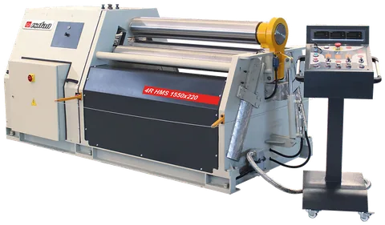
How to choose the right plate roller
Rolling is like forming on a press brake: it looks like a black art, but it is not. Part of taking the magic out of it is selecting the right size of machine. The rule of thumb for 3-roll and 4-roll machines is that a plate roll forms its rated thickness into a cylinder of about 1.5 times the top roll diameter: a machine with a 10″ top roll rolls its full capacity to a minimum inside diameter of about 15″. Manufacturers therefore quote two capacities — at 1.5× and at 5× the top roll diameter — and the thickness a machine rolls into a large diameter is always higher than what it rolls into a tight one.
To size a plate roll correctly you need the yield and tensile strength of the material, the width (working length), the thickness, and the diameter or radius of the part — a higher yield or a tighter diameter needs more force. You also need the minimum and maximum diameters you will form, and whether you will roll cones or special shapes, because that decides the type of machine and its options. Almost every plate roll is at its most precise when working at about 50 % of its rated capacity, so choose a machine that will also carry the jobs you expect in a few years, not only today's.
4-roll plate rolling machines
Four-roll machines have a top roll, a pinching (bottom) roll and two side rolls. They produce the fastest and most accurate bends. The flat plate is loaded horizontally, clamped between the top and bottom roll, and one side roll rises to pre-bend the leading edge, leaving the smallest possible flat zone; the plate stays clamped while the cylinder is rolled, and the trailing edge is pre-bent by the other side roll at the end — a one-direction, single-pass operation.
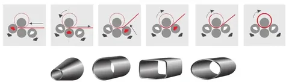
Because the plate is held square between the top and bottom rolls throughout pre-bending and rolling, it cannot slip, and the back side roll doubles as a back gauge that squares the plate on loading — no second person is needed to align it. The operator never removes, flips and re-squares the plate as on a 3-roll initial-pinch machine. Four-roll machines feed from either side, so a machine fed from one side only can stand against a wall. For cones the side rolls are tilted to set the cone angle, and with careful positioning 4-roll machines also form oval, polycentric and boxed shapes. On the İşitan 4R HMS the three moving rolls run on hydraulic cylinders along a pyramid-style linear path, with digital readouts or NC control for every position.
3-roll plate rolling machines
Double-pinch 3-roll machines
Three-roll double-pinch machines are built from light to very heavy capacities. The two side rolls sit left and right of the top roll on the same level and both move, so the plate can be pre-bent at both ends without removing and flipping it, and the cylinder is rolled to size immediately after pre-bending. The back side roll again serves as a back gauge, and cones are rolled by tilting the side rolls. Pre-bending on a 3-roll machine requires the plate to be tilted down as it is fed, whereas a 4-roll machine loads horizontally at feed level and can use powered roller tables.
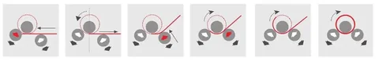
Initial-pinch 3-roll machines
Initial-pinch (single-pinch) machines — the İşitan MRM-H, MRM-S, IRM and RM and every slip roll — pinch the sheet between two vertically opposed rolls while the third roll, the back roll, moves up to bend it. The leading edge is pre-bent against the back roll, the sheet is fed through and rolled, and to pre-bend the trailing edge the sheet is turned around and fed again. That extra handling makes them slower than double-pinch or 4-roll machines in production, but for the job shop, the HVAC contractor and the fabricator rolling a few cylinders a day they are the most cost-effective plate rolls there are — which is why they outsell every other type.
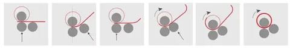
Variable-geometry 3-roll machines
Variable-geometry (variable-pitch) 3-roll machines roll the widest range of thicknesses in relation to the top roll diameter and are used for medium and heavy plate. All three rolls move: the top roll vertically, the side rolls horizontally. With the side rolls fully open the machine has its greatest mechanical advantage and rolls its thickest plate; with the side rolls moved in, it rolls thin material to small diameters — a machine rated for 2″ plate can roll 1/2″ well by reducing the mechanical advantage. Each roll on its own axis helps make a perfect bend, and the back roll serves as the back gauge.
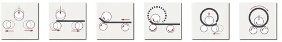
Static pre-bending and dynamic bending
There are two bending processes inside a plate roll. In static pre-bending the sheet is held stationary while a roll runs up along it to bend the leading edge. In dynamic bending the sheet is in motion while it passes through the machine; the movement lets the machine work more efficiently, which is why the rolling capacity is higher than the pre-bending capacity on every spec sheet.
Cone bending
A plate roller also forms cones. The blank is first cut flat with the correct inner and outer radius, then fed with the small radius held against a cone-rolling attachment (a hardened contrast die) so that the inner radius travels through the rolls more slowly than the outer one. Both 3-roll and 4-roll machines can tilt the forming rolls to set the cone angle, and both should have the hardened die to guide and slow the small diameter. Cones take more time and care than cylinders: on a 3-roll double-pinch machine all three rolls are driven, which makes it harder for the die to retard the small diameter, so a 4-roll machine with inclinable rolls and a contrast die rolls cones best. On İşitan plate rolls the cone-bending device is standard, from the slip rolls up to the 4R HMS.
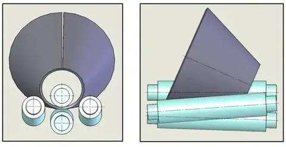
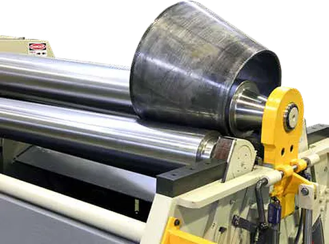
Controls and automation
Plate rolls are driven and controlled in several ways. Digital readouts (DRO) show the position of every roll so the operator can repeat a setting and set travel limits that stop the rolls before the material is over-bent; the İşitan 4R HMS comes with three readouts as standard and the MRM-H with two. An NC teach-in control records the operator's movements in teach mode and repeats them in automatic mode; it stores many programs, which can also be written in edit mode by entering roll positions, and an NC plate roll pays for itself quickly in repeat work. A CNC control goes a step further: starting from a menu of standard shapes — cylinder, oval, polycentric, bucket — and the shell data (radius, thickness, width, material), it draws the workpiece and generates the complete bending program, which the operator can fine-tune.
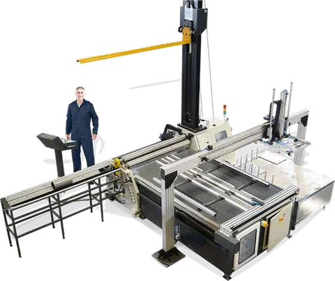
Handling and automation options. A plate rolling application may need side and overhead supports, automatic loading tables and in-feed conveyors, or automatic part ejectors — productivity tools that are easy to forget when choosing a machine. Overhead supports stop light material collapsing when it is rolled to large diameters, and a side support keeps a large-radius sheet from recurving towards the floor. On the 4R HMS the hydraulic overhead crane, side supports, vacuum sheet feeder and ejector turn the roll into an automation line where the operator only loads blanks and takes finished cylinders to the welder.
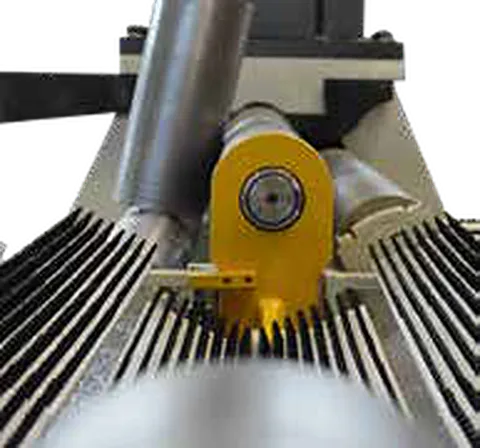
Rolls: crowning, hardness and finish
Roll crowning
Every plate roll has a top roll, and the top roll can be sized to roll cylinders close to its own diameter — but a small top roll deflects in the middle under the pressure of the plate, while a large one deflects less and limits the machine to larger diameters. Deflection shows up as a barrel-shaped cylinder with ends that are not parallel. Think of standing in the middle of a wooden beam supported at both ends: the longer the beam, the more it sags. The same happens to a long top roll of small diameter.
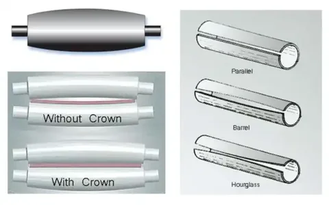
To compensate, the top roll is crowned — ground slightly barrel-shaped so the rolling pressure is distributed evenly along the plate. Too little crowning leaves a barrel effect (the part is wider in the middle than at the ends); too much gives an hourglass. Because most fabricators roll many materials, rolls are machined with an optimum crown, typically for about 75 % of nominal capacity, and the achievable tolerance depends on thickness, width and diameter. Options can be fitted to adjust for specific tolerances.
Hardened rolls
Today's harder materials and laser- and plasma-cut edges call for hard roll surfaces. A hardness of 50–55 HRC gives a reasonable depth and long protection against wear; above 60 HRC the hardened layer is shallow and the surface may crack or craze. İşitan induction-hardens the rolls of the 4R HMS and 3R HMD as standard and offers hardened rolls as an option on the other series.
Workpiece finish
Standard rolls produce accurate parts, but not polished ones. For a mark-free finish you need ground and polished rolls, which are more easily damaged. To roll aluminum composite panels (Alucobond / ACM) without scratching the painted face, choose the MRM-S special model with a top roll of segmented plastic rings.
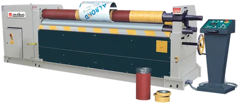
Safety
New plate rolls carry emergency-stop buttons, safety trip wires or switches on the drop-end, low-voltage control circuits and detached operator consoles. It remains the owner's responsibility to install the machine properly, keep the guards in place and train the operators — which is part of every NovoTech installation.
Questions we get asked about plate rollers
Plate roller, plate roll, slip roll, bending rolls — are these the same machine?
Largely yes. "Plate roller", "plate rolling machine" and "plate bending rolls" all describe the three- or four-roll machine that rolls flat plate into cylinders and cones; "slip roll" or "sheet metal roller" is the light-gauge version for sheet up to about 14 ga, whose top roll slips open to remove the part. We use the manufacturer's terms on each page so you can match them to the capacity tables.
How do I choose the size of a plate roller?
Three numbers: the longest cylinder you roll (working length), the thickest plate you roll at that length, and the smallest diameter you need. Plate rolls are rated at 1.5× and 5× the top roll diameter — a machine that rolls 1/4″ plate into a 20″ cylinder will not roll 1/4″ into a 10″ cylinder. Send us those three numbers and we will point to the models on the capacity tables.
Which plate rollers does NovoTech keep in stock?
We stock the popular MRM-S motorized rolls and the IR and R slip rolls in Mississauga, ON, and bring 4R HMS and MRM-H hydraulic machines in to order with their options. In-stock machines carry the 7-day money-back guarantee.
Do you install plate rollers and train operators?
Yes — our technicians commission the machine anywhere in Canada, level it, check the roll parallelism and train your operators on pre-bending, cones and the NC control where fitted.
What voltage do İşitan plate rollers run on?
Three-phase machines are supplied for 600 V as standard with a CSA-approved panel; 208 V, 240 V and 480 V 3-phase are available on request, and 240 V single-phase on models with a small enough motor. Manual slip rolls have no electrics.
Request a quote
Tell us which machine you are looking at and the bar sizes you run, and we will come back with pricing, delivery and the right voltage option for your shop. We answer within one business day.
Prefer to talk? Call +1 647 526 5510 (Mon–Fri 9:00–17:00 Eastern) or email infoNovoTechMachineTools.com.
1365 Mid-Way Blvd, Unit 26, Mississauga, ON L5T 2J5
Represent NovoTech in your city or province
Sales agents wanted across Canada
NovoTech is appointing independent sales agents and dealers in cities and provinces across Canada — British Columbia, Alberta, Saskatchewan, Manitoba, Ontario outside the GTA, Quebec and Atlantic Canada. If you already call on steel fabricators, rebar shops, precast plants, HVAC shops or contractors, add a proven line of GMS, Dener and other metalworking machinery to what you offer.
- Open to individuals and companies with customers in metal fabrication or construction
- Quotations, brochures, videos and demonstrations prepared by NovoTech for your customers
- Installation, operator training, spare parts and technical support stay with NovoTech in Mississauga, ON
Tell us your territory and the customers you serve — we reply within one business day.